Contents
clear all close all tic
Q2
img = phantom(256);
figure(1)
imshow(img);
colorbar
title('Phantom image')
(a)
theta = [0:3:177]; radon_trans = radon(img,theta);
Backprojection
back_proj = iradon(radon_trans, theta, 'linear', 'none'); figure(2) imshow(back_proj,[]); colorbar title('Backprojection')
Filtered backprojections
radon_rl1 = myFilter(radon_trans, 'Ram-Lak', 1); backproj_rl1 = iradon(radon_rl1, theta, 'linear', 'none', 1, size(img,1)); radon_sl1 = myFilter(radon_trans, 'Shepp-Logan', 1); backproj_sl1 = iradon(radon_sl1, theta, 'linear', 'none'); radon_cos1 = myFilter(radon_trans, 'Cosine', 1); backproj_cos1 = iradon(radon_cos1, theta, 'linear', 'none'); radon_rl2 = myFilter(radon_trans, 'Ram-Lak', 0.5); backproj_rl2 = iradon(radon_rl2, theta, 'linear', 'none'); radon_sl2 = myFilter(radon_trans, 'Shepp-Logan', 0.5); backproj_sl2 = iradon(radon_sl2, theta, 'linear', 'none'); radon_cos2 = myFilter(radon_trans, 'Cosine', 0.5); backproj_cos2 = iradon(radon_cos2, theta, 'linear', 'none'); figure(3); imshow(backproj_rl1, []); colorbar title('Ram-Lak filter, L = \omega_{max}'); figure(4); imshow(backproj_sl1, []); colorbar title('Shepp-Logan filter, L = \omega_{max}'); figure(5); imshow(backproj_cos1, []); colorbar title('Cosine filter, L = \omega_{max}'); figure(6); imshow(backproj_rl2, []); colorbar title('Ram-Lak filter, L = \omega_{max}/2'); figure(7); imshow(backproj_sl2, []); colorbar title('Shepp-Logan filter, L = \omega_{max}/2'); figure(8); imshow(backproj_cos2, []); colorbar title('Cosine filter, L = \omega_{max}/2');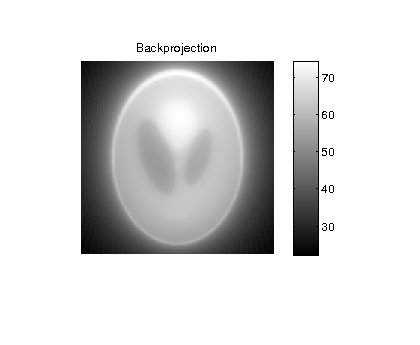 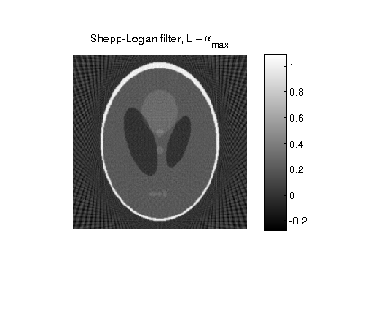 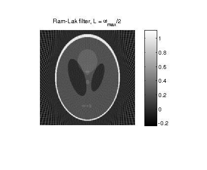

Comments for (a):
The reconstructed images for the  are clearly blurred/smmoth compared to their 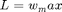 counterparts. This is to be expected as higher frequency components are chopped off in the former case. Comparing between filters, the graininess in the Ram-Lak filter is the highest, followed by the Shepp-Logan and Cosine filters. Looking at their frequency responses, it can be understood to be a result of amplication of quantization noise, i.e., when computing the Radon transforms and inverse Radon transforms, DFT is used which is a discretized version of the theoretically used DTFT. This introduces the reconstruction error, which is most amplified by filters with higher magnitudes at higher frequncies, .ie., Ram-Lak.
are clearly blurred/smmoth compared to their 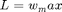 counterparts. This is to be expected as higher frequency components are chopped off in the former case. Comparing between filters, the graininess in the Ram-Lak filter is the highest, followed by the Shepp-Logan and Cosine filters. Looking at their frequency responses, it can be understood to be a result of amplication of quantization noise, i.e., when computing the Radon transforms and inverse Radon transforms, DFT is used which is a discretized version of the theoretically used DTFT. This introduces the reconstruction error, which is most amplified by filters with higher magnitudes at higher frequncies, .ie., Ram-Lak.
(b)
Blurring images
mask1 = fspecial ('gaussian', 11, 1); mask2 = fspecial ('gaussian', 51, 5); img_blur1 = conv2 (img, mask1, 'same'); img_blur2 = conv2 (img, mask2, 'same'); figure(9); imshow(img,[]); colorbar title('S_0'); figure(10); imshow(img_blur1,[]); colorbar title('S_1'); figure(11); imshow(img_blur2,[]); colorbar title('S_5');
Computing Radont transform
radon_trans_blur1 = radon(img_blur1,theta); radon_trans_blur2 = radon(img_blur2,theta);
Applying Ram-Lak filter
radon_blur1_filt = myFilter(radon_trans_blur1, 'Ram-Lak', 1); radon_blur2_filt = myFilter(radon_trans_blur2, 'Ram-Lak', 1);
Backprojection
backproj_blur1 = iradon(radon_blur1_filt, theta, 'linear', 'none'); backproj_blur2 = iradon(radon_blur2_filt, theta, 'linear', 'none'); figure(12); imshow(backproj_rl1,[]); colorbar; title('Filtered backprojection for S_0'); figure(13); imshow(backproj_blur1,[]); colorbar; title('Filtered backprojection for S_1'); figure(14); imshow(backproj_blur2,[]); colorbar; title('Filtered backprojection for S_5');
Computing RRMSE
rrmse_s0 = sqrt(sum(sum((img-backproj_rl1).^2))/sum(sum(img.^2)));
rrmse_s1 = sqrt(sum(sum((img_blur1-backproj_blur1(2:257,2:257)).^2))/sum(sum(img_blur1.^2)));
rrmse_s5 = sqrt(sum(sum((img_blur2-backproj_blur2(2:257,2:257)).^2))/sum(sum(img_blur2.^2)));
fprintf('The RRMSE for S_0 is %.3f, for S_1 IS %0.3f and for S_5 is %.3f\n', rrmse_s0, rrmse_s1, rrmse_s5);
The RRMSE for S_0 is 0.291, for S_1 IS 0.129 and for S_5 is 0.029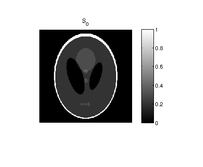 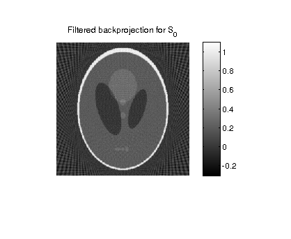 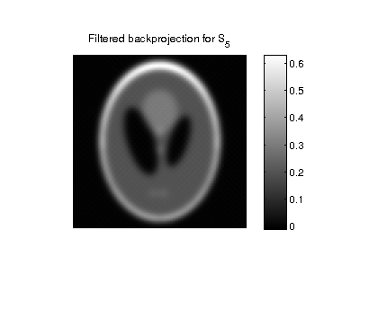
Comments about (b):
The RRMSE for the unblurred phantom image is the most with the most blurred image having the least RRMSE. Blurring the image corresponds to low-pass filtering in the frequnecy domain, hence attenuating high frequency components. Since the graininess in the reconstruction is due to amplification of "quantization noise", i.e., high-frequency components, the blurred images would naturally have lower reconstruction error.
(c)
S_0
rrmse_s0_arr = zeros(1,512); for L=1:512 radon_s0 = myFilter(radon_trans, 'Ram-Lak', L/512); backproj_s0 = iradon(radon_s0, theta, 'linear', 'none'); rrmse_s0_arr(L) = sqrt(sum(sum((img-backproj_s0(2:257,2:257)).^2))/sum(sum(img.^2))); end figure(15); plot(rrmse_s0_arr); title('RRMSE for S_0'); xlabel('L'); ylabel('RRMSE');
S_1
rrmse_s1_arr = zeros(1,512); for L=1:512 radon_s1 = myFilter(radon_trans_blur1, 'Ram-Lak', L/512); backproj_s1 = iradon(radon_s1, theta, 'linear', 'none'); rrmse_s1_arr(L) = sqrt(sum(sum((img_blur1-backproj_s1(2:257,2:257)).^2))/sum(sum(img_blur1.^2))); end figure(16); plot(rrmse_s1_arr); title('RRMSE for S_1'); xlabel('L'); ylabel('RRMSE');
S_5
rrmse_s5_arr = zeros(1,512); for L=1:512 radon_s5 = myFilter(radon_trans_blur2, 'Ram-Lak', L/512); backproj_s5 = iradon(radon_s5, theta, 'linear', 'none'); rrmse_s5_arr(L) = sqrt(sum(sum((img_blur2-backproj_s5(2:257,2:257)).^2))/sum(sum(img_blur2.^2))); end figure(17); plot(rrmse_s5_arr); title('RRMSE for S_5'); xlabel('L'); ylabel('RRMSE');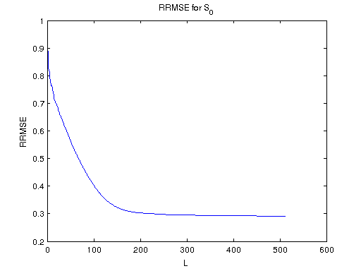 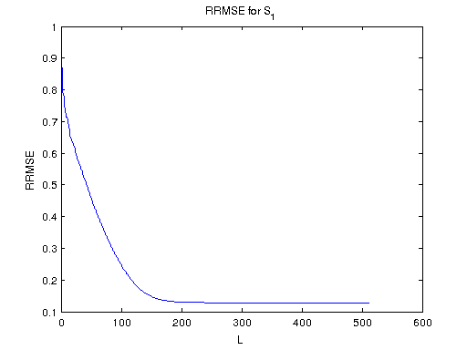 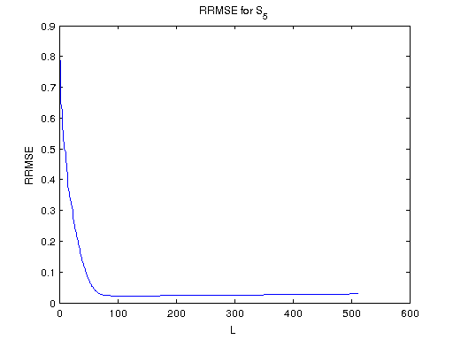
Comments about (c):
As L increses, RRMSE decreases. This is because lesser information from the image is lost as we incrase L. We are chopping off fewer frequency components. This differs from Gaussian blurring in that chopping off frequencies (ideal low-pass filtering) results in ringing artifacts (Gibbs phenomenon).
toc
Elapsed time is 65.870160 seconds.